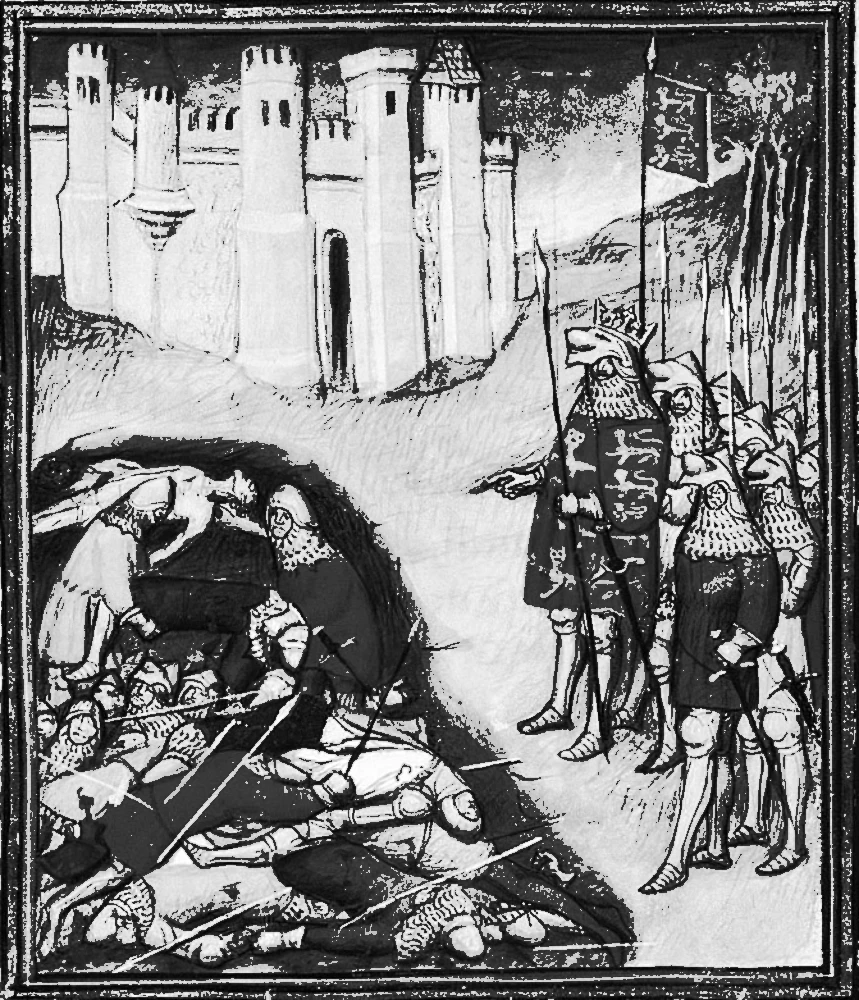
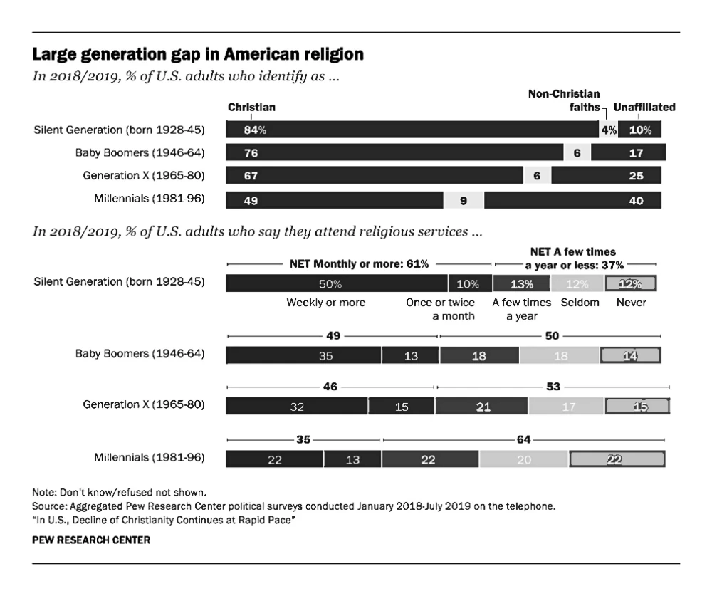
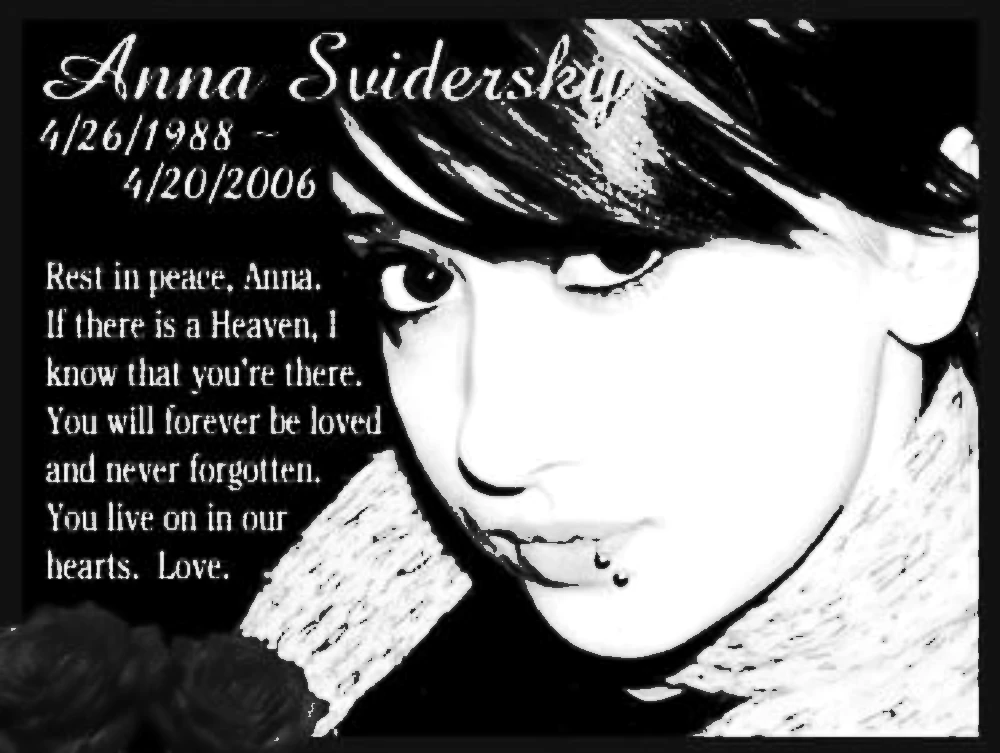

Conflicts
Cumulatively, millions have died in European wars of succession, where the inheritance of a royal title and the power that comes with it is contested by a rival faction. The sheer amount of blood that has been spilled in the pursuit of hereditary immortality speaks to its power to inspire. Here’s an inexhaustive list of such conflicts, restricted to Europe:
The War of the Spanish Succession (1701–1714) - 105,000 dead: Death of the childless Charles II of Spain.
The Hundred Years' War (1337–1453) 2,300,000–3,500,000 dead: Edward III of England makes a hereditary claim to the French Throne.
The War of the Roses (1455–1487) - 105,000 dead: Royal houses of York and Lancaster pose rival claims to the English throne.
The War of the Austrian Succession (1740–1748) - 375,000 dead: the contested right of Maria Theresa to succeed her father, Emperor Charles VI, as ruler of the Habsburg monarchy.
The War of the Polish Succession (1733–1735) - 100,000 dead: Contested succession claims backed by rival nations to the throne of Augustus II the Strong.
The Castilian Civil War (1351–1369) - death toll unknown: Rival claims to the Crown of Castile. Waged between Peter of Castile and his half-brother, Henry of Trastámara.
The War of the Bavarian Succession (1778–1779) - 10,000 dead: a dispute between the Austrian Habsburg monarchy and an alliance of Saxony and Prussia over succession to the Electorate of Bavaria.
The Jacobite Rebellions (1689-1745) - deathtoll unknown: Rebellions started in an attempt to restore King James VII to the throne of Scotland.

King Edward III counting the dead on the battlefield of Crécy. 1410.
https://en.wikipedia.org/wiki/List_of_wars_of_succession
Declining religiosity
In the US, Millennials are about 4 times more likely to declare themselves unaffiliated with any religion than their grandparents. Stats like these indicate a generational shift away from organized religions and the various afterlives they propose.

Large generation gap in American religion. Pew Research. 2019.
Digitization
Digitization is the process of converting physical information, such as documents, images, or objects, into digital formats. This typically involves scanning or photographing physical items and then using software to create digital files, such as PDFs, images, or data entries. These digital files can then be stored, accessed, and shared electronically, making the information more accessible, searchable, and preservable. Digitization plays a key role in preserving cultural heritage, improving access to information, and supporting the transition to digital archives and records.
History shows that despite these efforts, technology has progressed and will continue to do so.
The Archive Pro A1/A2 scanner. Micrographics Data. An archival-grade scanner like this one is typically used to create high-resolution digital images of the document to be archived.
https://en.wikipedia.org/wiki/Digitization
lN1UA8n. Tobias Løfgren. 2018. The vulnerability of digital data has given rise to the practice of glitch art, or the intentional corruption of a data file to produce different audiovisual effects.
For starters, all data degrades over time. In the context of digital immortality, preserving data is important because it’s the material that enables us to transmit information to future generations. Its loss represents a loss of information that these future generations can access. Many of the companies in the DAI claim to be able to preserve their users’ data for multiple generations, but to actually do so, these companies must prevent physical data loss and logical data loss.
Behavior is influenced
Research by Mori et al. compares the ways in which users reacted to the murder of American teenager Anna Svidersky on three different platforms: MySpace, Youtube, and an online condolence book. They concluded that the functionalities and design of each platform affected the character of the public grieving that occurred. Notably, they noticed there was significantly more trolling on Youtube as opposed to virtual spaces expressly designed for grieving, probably due to the fact that Youtube is much more anonymous.

An online memorial message that was posted on Svidersky’s MySpace page after her death. The page has since been removed.
"Disk Defragmentation Explained - Defrag Hard Drive - Speed Up PC." Youtube, uploaded by PowerCert Animated Videos, 2015, https://www.youtube.com/watch?v=AtRIOUZuI2c&ab_channel=PowerCertAnimatedVideos